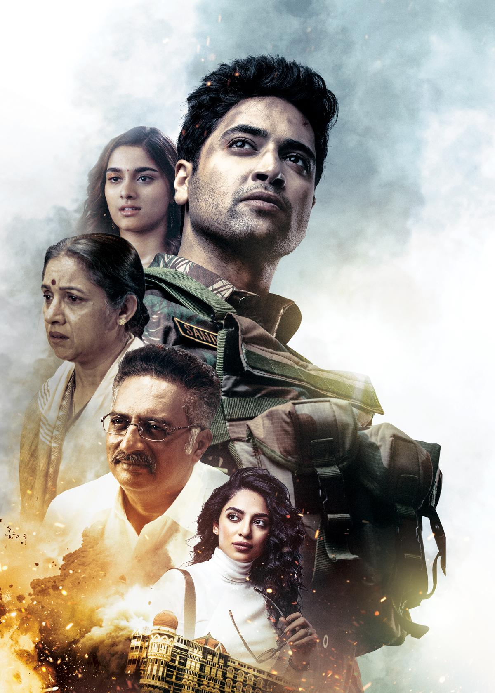

I am Minitha Sai Penumachha from Hyderabad, India. I have completed my Bachelors at Veltech Rangarajan Dr. Sagunthala R&D Institute of Science and Technology in 2022. I want to gain more knowledge in this field and to improve my technical skills. My goal is to become a full stack developer.
This movie is about the army man who lost his life in terrorist attacks. The story based on the life of Major Sandeep Unnikrishnan, who was killed in the line of duty during the November 2008 Mumbai terrorist attacks. When the unavoidable occurs, you lament not just the soldier who gave his life in service to his nation but also the life he may have had.
